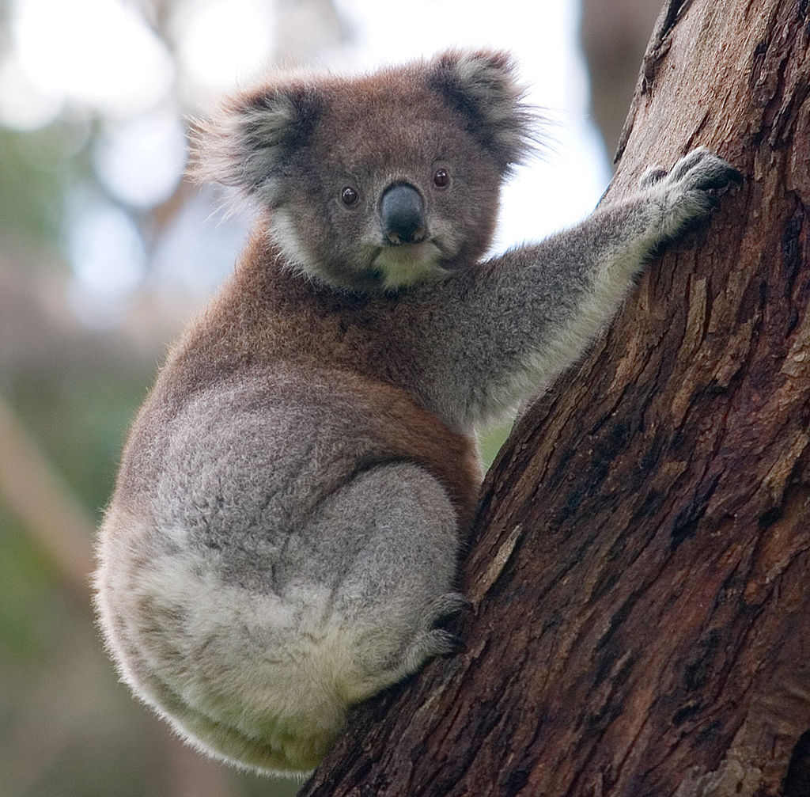
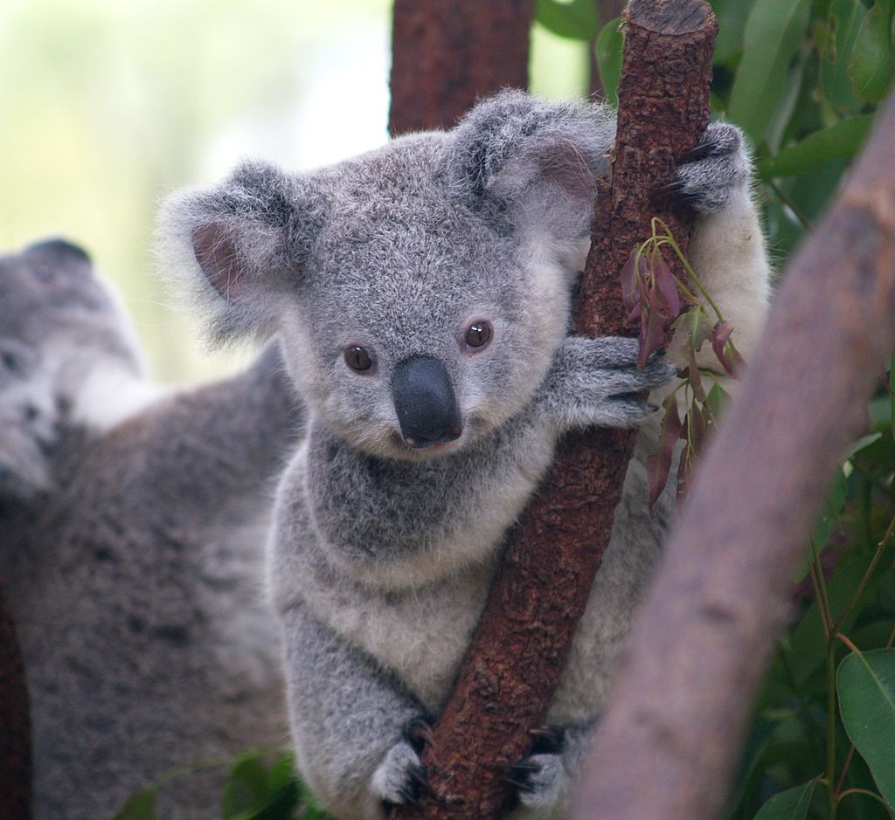

Il koala o fascolarto (Phascolarctos cinereus Goldfuss, 1817), detto anche "piccolo orso", è un mammifero marsupiale australiano, unico rappresentante vivente del genere
Phascolarctos de Blainville, 1816 e della famiglia Phascolarctidae Owen, 1839, o marsupiali arrampicatori [1]

Indice:
- Descizione
- Biologia
Curiosità
Note
Descrizione
Il koala ha grandi orecchie arrotondate e pelose, una grossa testa. occhi vivaci, muso largo e naso nudo e schiacciato. Ha una pelliccia di colore grigiastro: la parte superiore del corpo è di colore grigio cenere, il ventre bianco giallastro, il pelo è lungo, morbido, lanoso e, per via della dieta, odora di eucalipto. Il corpo è tozzo e sprovvisto di coda, i piedi hanno cinque dita prensili, con artigli affilati che gli permettono di arrampicarsi sugli alberi, sui quali vive in piccoli gruppi. I koala maschi si riconoscono dalle dimensioni leggermente maggiori del muso e delle orecchie e da una caratteristica striscia di pelo scuro che attraversa il petto bianco nella quale sono presenti delle ghiandole oleose che permettono di marchiare il territorio strofinando il petto sui tronchi.
Biologia
Comportamento
Il koala passa quasi tutta la vita sugli alberi di eucalipto. Verso sera, in quanto arboricolo notturno, inizia il proprio pasto composto di foglioline e gemme di eucalipto, consumandone abitualmente circa mezzo kg al giorno. Trascorre il resto del tempo sonnecchiando, incuneato saldamente nella biforcazione di un ramo. Occasionalmente scende a terra per cambiare albero o per favorire la digestione inghiottendo terra, corteccia e sassolini. La masticazione del koala è estremamente lunga, e l'animale non inghiotte le foglie e le gemme prima di averle ridotte a una pasta finissima con le proprie forti mandibole.
Il koala occupa una nicchia ecologica ben precisa, basando la propria alimentazione su un tipo di vegetale le cui foglie sono estremamente carenti in proteine e grassi, e ricche di fenoli e terpeni tossici per molte specie di animali. Una siffatta alimentazione non può che comportare un metabolismo molto basso anche per un mammifero: il koala, infatti, rimane immobile per 18-19 ore al giorno, gran parte delle quali passate dormendo. Nel periodo della riproduzione il tempo rimanente lo passa ad accoppiarsi.
Per digerire le foglie, l'apparato digerente del koala dispone di un fegato capace di disattivarne le tossine e di un intestino adatto a trarre quanto più nutrimento dalla poverissima dieta, anche grazie ad un tratto, il cieco, che in questi animali è inusualmente ampio.
Agli eucalipti essi devono il loro caratteristico profumo balsamico. Gli oli essenziali che si trovano su tali alberi ne impregnano il morbido pelo, fungendo da protezione contro i parassiti.

Alimentazione
Come precedentemente detto, la dieta del koala adulto si basa fondamentalmente sul consumo di foglioline e gemme di eucalipto, da cui traggono nutrimento e acqua, ma essendo questa una tipologia di pianta potenzialmente tossica per molti mammiferi, i koala devono ricorrere al metabolismo di determinati microorganismi per poterla digerire. Essi infatti di per sé non possono assimilare la cellulosa che si trova nell'albero; per questo, si servono di alcuni microorganismi che digeriscono la cellulosa, i quali popolano densamente il punto di convergenza tra l'intestino crasso e quello tenue, il cieco, che ne è l'estensione posteriore.
L'intestino cieco è la parte più interessante del sistema digestivo dei koala. Questo segmento funziona come una camera di fermentazione in cui i microbi digeriscono la cellulosa mentre il passaggio delle foglie viene ritardato. In tal modo il koala può neutralizzare gli effetti venefici dell'olio contenuto nelle foglie di eucalipto. Il cucciolo di Koala invece non possedendo alla nascita una flora intestinale in grado di digerire la cellulosa, sviluppa i batteri necessari alla digestione delle foglie solamente attraverso la coprofagia. Essi infatti, inizialmente mangiano solamente le feci della madre per ottenere i batteri necessari alla digestione dell'eucalipto.
Curiosità
- Nonostante l'aspetto piacevole e il comportamento docile, il koala non è un animale da compagnia. È impossibile da addomesticare, e non ha confidenza con l'uomo. Inoltre, in Australia trattenere un koala come animale domestico è illegale. [2]
- Il koala è uno dei pochissimi mammiferi, al di là dei primati, che sia dotato di impronte digitali. Le impronte digitali del koala sono sorprendentemente simili a quelle umane, e la struttura delle creste sull'epidermide delle mani del koala, anche al microscopio elettronico, risulta sostanzialmente indistinguibile da quella dei primati. Si tratta di un esempio straordinario e notevole di evoluzione coincidentale.
- La parola koala deriva dalla lingua aborigena. È spesso ritenuto erroneamente che il vocabolo significhi "colui che non beve", in quanto i koala assumono liquidi quasi esclusivamente dalle foglie di eucalipto.
- Kolby, un giovane koala, è uno dei protagonisti del cartone animato Kolby ed i suoi piccoli amici, trasmesso da Canale 5 nel 1986.
Note